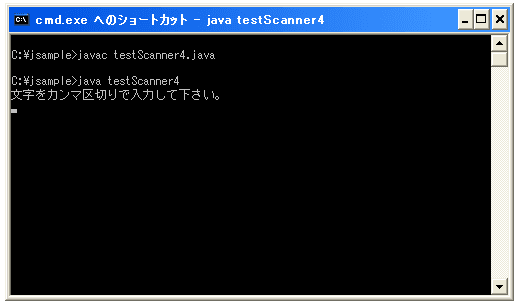
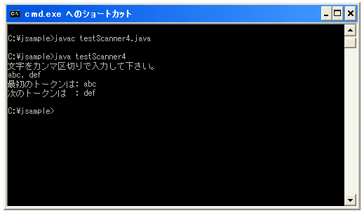

- Home ›
- Java入門 ›
- Scannerクラス
区切り文字を変更する
デフォルトではトークン毎の区切り文字として空白(実際には空白相当の値)が使われていますが、CSV形式のデータを取り扱う時のように区切り文字を例えばカンマ(,)などに変更することができます。
useDelimiter public Scanner useDelimiter(String pattern)
このスキャナの区切り文字パターンを、指定された String から作成されたパターンに設定します。 このメソッドの useDelimiter(pattern) 形式の呼び出しの動作は、 hasDelimiter(Pattern.compile(pattern)) の呼び出しとまったく同じになります。 パラメータ: pattern - 区切り文字パターンを指定する文字列 戻り値: 現在のスキャナ
例えば区切り文字をカンマ(,)に変更する場合は下記のようになります。
Scanner scan = new Scanner(System.in);
scan.useDelimiter(",");
指定できる区切り文字はPatternクラスで定義されている値を使いますが、例えば下記のようなものがあります。
x 文字 x
\\ バックスラッシュ文字
\t タブ文字 ('\u0009')
\n 改行文字 ('\u000A')
\r キャリッジリターン文字 ('\u000D')
[abc] a、b、または c (単純クラス)
[^abc] a、b、c 以外の文字 (否定)
[a-zA-Z] a ～ z または A ～ Z (範囲)
[a-d[m-p]] a ～ d、または m ～ p: [a-dm-p] (結合)
. 任意の文字 (行末記号とマッチする場合もある)
\d 数字: [0-9]
\D 数字以外: [^0-9]
\s 空白文字: [ \t\n\x0B\f\r]
\S 非空白文字: [^\s]
\w 単語構成文字: [a-zA-Z_0-9]
\W 非単語文字: [^\w]
X? X、1 または 0 回
X* X、0 回以上
X+ X、1 回以上
X{n} X、n 回
X{n,} X、n 回以上
X{n,m} X、n 回以上、m 回以下
例えば改行(Windowsの場合)を区切り文字にする場合は下記のようになります。
scan.useDelimiter("\\r\\n");
※パターン文字列的には「\r\n」ですが、「\」文字はエスケープしないといけません。
カンマ区切りにして、カンマの前後に空白があっても無視する場合は下記のようになります。
scan.useDelimiter("\\s*,\\s*");
※空白文字を表す「\s」をエスケープして「\\s」とし、それが0回以上続いてもいいように「\\s*」としています。そしてカンマ(,)が続き、同じように0回以上の空白文字が続くパターンです。よって「abc,def,ghi」も「abc, def, ghi」も「abc , def , ghi」も同じようにトークンを取り出せます。
サンプルプログラム
では実際に試してみましょう。
import java.util.Scanner;
class testScanner4{
public static void main(String args[]){
System.out.println("文字をカンマ区切りで入力して下さい。");
Scanner scan = new Scanner(System.in);
scan.useDelimiter("\\s*,\\s*|\n");
String str = scan.next();
System.out.println("最初のトークンは: "+ str);
str = scan.next();
System.out.println("次のトークンは : "+ str);
}
}
上記を実際にコンパイルして実行してみると下記のようになります。

上記のようにキーボードからの入力待ちとなります。ここで「abc, def」と入力してからリータンキーを押すと下記のようになります。

( Written by Tatsuo Ikura )

著者 / TATSUO IKURA
初心者～中級者の方を対象としたプログラミング方法や開発環境の構築の解説を行うサイトの運営を行っています。